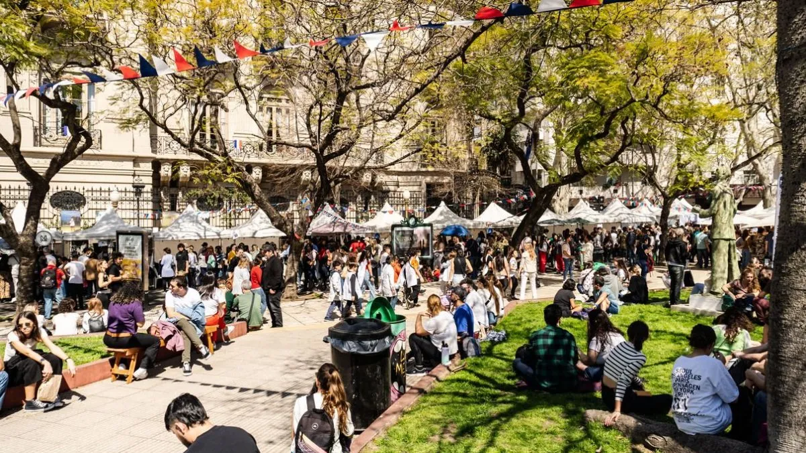

!Unete a nosotros en el festival!
Somos Fusion Gourmet, una empresa francesa fundada por el legendario Auguste Escoffier. Actualmente, nuestra CEO es su bisnieta, **Dayan Escoffier**, quien continúa con su legado de excelencia culinaria.